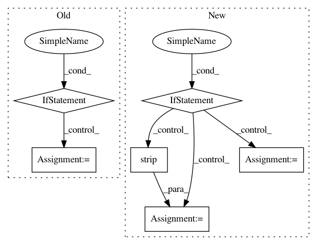

acc311dd3e15135ca35f69b0183e5b0f9f4beadf,tools/nni_gpu_tool/gpu_metrics_collector.py,,check_ready_to_run,#,27
Before Change
def check_ready_to_run():
//TODO check process in windows
if sys.platform == "win32":
return True
pgrep_output =subprocess.check_output("pgrep -fx \"python3 -m nni_gpu_tool.gpu_metrics_collector\"", shell=True)
pidList = []
for pid in pgrep_output.splitlines():
pidList.append(int(pid))
pidList.remove(os.getpid())
return len(pidList) == 0
def main(argv):
After Change
from xml.dom import minidom
def check_ready_to_run():
if sys.platform == "win32":
pgrep_output = subprocess.check_output("wmic process where "CommandLine like \"%nni_gpu_tool.gpu_metrics_collector%\" and name like \"%python%\"" get processId")
pidList = pgrep_output.decode("utf-8").strip().split()
pidList.pop(0) // remove the key word "ProcessId"
pidList = list(map(int, pidList))
pidList.remove(os.getpid())
return len(pidList) == 0
else:
pgrep_output =subprocess.check_output("pgrep -fx \"python3 -m nni_gpu_tool.gpu_metrics_collector\"", shell=True)
pidList = []
for pid in pgrep_output.splitlines():
pidList.append(int(pid))
pidList.remove(os.getpid())
return len(pidList) == 0
def main(argv):
metrics_output_dir = os.environ["METRIC_OUTPUT_DIR"]
if check_ready_to_run() == False:
// GPU metrics collector is already running. Exit
In pattern: SUPERPATTERN
Frequency: 4
Non-data size: 6
Instances
Project Name: Microsoft/nni
Commit Name: acc311dd3e15135ca35f69b0183e5b0f9f4beadf
Time: 2019-04-27
Author: 15094695770@163.com
File Name: tools/nni_gpu_tool/gpu_metrics_collector.py
Class Name:
Method Name: check_ready_to_run
Project Name: nltk/nltk
Commit Name: 6423b7af778be851da8e27ff0539d1fd6169007c
Time: 2019-05-06
Author: alvations@gmail.com
File Name: nltk/corpus/reader/wordnet.py
Class Name: WordNetCorpusReader
Method Name: custom_lemmas
Project Name: GoogleCloudPlatform/PerfKitBenchmarker
Commit Name: 8b31e87c8c1b8aeaebb13a50946b3a2ef7e3acc2
Time: 2017-08-30
Author: ehankland@google.com
File Name: perfkitbenchmarker/providers/kubernetes/kubernetes_virtual_machine.py
Class Name: DebianBasedKubernetesVirtualMachine
Method Name: RemoteHostCopy
Project Name: ricsinaruto/Seq2seqChatbots
Commit Name: fbf690e125bf8313fb2d2e3f37fb9f51c563ef66
Time: 2018-04-11
Author: ricsinaruto@hotmail.com
File Name: t2t_csaky/problems/persona_chat_chatbot.py
Class Name: PersonChatChatbot
Method Name: create_data